一、优化问题的基本概念
一般形式
优化问题（optimization problem）的一般形式： \(min\ f(x),\ s.t.\ x\in X\)
- \(x=(x_1,x_2,\dots,x_n)^T\) ：决策向量（decision vector）
- \(f:R^n\to R\) ：目标函数（objective function）
- \(X\subset R^n\) ：约束集合（constraint set）或可行域（feasible region）
- 约束集可由 \(c_i(x)\le 0\) 和 \(c_i(x)=0\) 给出
基本术语
- 可行点（feasible point）： \(x\in X\)
- 可行域（feasible region）： \(X\)
- 最优解（optimal solution） \(x^*\) ：对任意 \(x\in X\) ，有 \(f(x^*)\le f(x)\)
- 最优值（optimal value）： \(f(x^*)\)
- 最大化可改写为最小化： \(max\ f(x)\iff min(-f(x))\)
- 若最小值或最大值在 \(X\) 上取不到，则考虑下确界 \(inf\ f(x)\) 和上确界\(sup\ f(x)\)
全局最优与局部最优
- 全局极小点（global minimum）：若 \(x\in X\) 且 \(f(x)\le f(y)\) 对所有 \(y\in X\) 成立
- 局部极小点（local minimum）：若存在 \(\varepsilon\) -邻域，使得附近可行点都满足 \(f(x)\le f(y)\)
- 严格局部极小点（strict local minimum）：若附近所有 \(y\ne x\) 都满足 \(f(x)
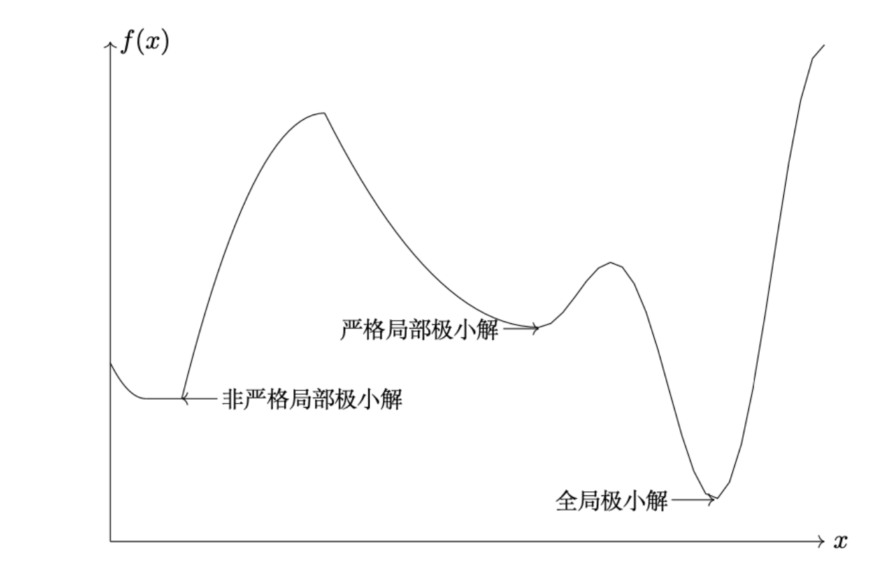
算法收敛
- 迭代算法（iterative algorithm）产生序列 \(x_k\)
- 若 \(lim_{k\to\infty}||x_k-x^*||=0\) ，则称算法收敛到最优解
- Q-线性收敛： \(\frac{||x_{k+1}-x^*||}{||x_k-x^*||}\le a,\ a\in(0,1)\)
- Q-超线性收敛： \(lim_{k\to\infty}\frac{||x_{k+1}-x^*||}{||x_k-x^*||}=0\)
- Q-二次收敛： \(\frac{||x_{k+1}-x^*||}{||x_k-x^*||^2}\le a,\ a>0\)
- 无约束优化的常见停止准则： \(\frac{f(x_k)-f^*}{max(|f^*|,1)}\le \varepsilon_1,\ ||\nabla f(x_k)||\le \varepsilon_2\)
二、向量范数与矩阵范数
向量范数
向量范数（vector norm）是映射： \(||\cdot||:R^n\to R_+\)，并满足：
- 正定性（positive definiteness）： \(||v||\ge 0\) ，且 \(||v||=0 \iff v=0\)
- 齐次性（homogeneity）： \(||\alpha v||=|\alpha|\,||v||\)
- 三角不等式（triangle inequality）： \(||v+w||\le ||v||+||w||\)
常见向量范数
- \(l_1\) 范数： \(||x||_1=\sum_i |x_i|\)，适合刻画稀疏性（sparsity）或分量累积误差
- \(l_2\) 范数： \(||x||_2=(\sum_i x_i^2)^{1/2}\)，欧氏距离
- \(l_\infty\) 范数： \(||x||_\infty=\max_i |x_i|\)，最大分量偏差
Cauchy-Schwarz 不等式
对任意 \(a,b\in R^n\) ：\(|a^Tb|\le ||a||_2\,||b||_2\)。当且仅当 \(a,b\) 线性相关时取等号。
矩阵范数
对 \(A=(A_{ij})\in R^{m\times n}\) ：
- Frobenius 范数： \(||A||_F=(\sum_{i,j} A_{ij}^2)^{1/2}\)
- 逐项绝对值和范数： \(\sum_{i,j}|A_{ij}|\)
- 列和范数： \(||A||_1=\max_{1\le j\le n}\sum_{i=1}^m |a_{ij}|\)
- 行和范数： \(||A||_\infty=\max_{1\le i\le m}\sum_{j=1}^n |a_{ij}|\)
- 谱范数： \(||A||_2=\sqrt{\lambda_{\max}(A^TA)}\)
- 算子范数：\(||A||_{(m,n)}=\max_{x\in R^n,\ ||x||_{(n)}=1} ||Ax||_{(m)}\)
设 \(\sigma_1,\dots,\sigma_r\) 是 \(A\) 的非零奇异值，其中 \(r=rank(A)\) 。
- 核范数： \(||A||_*=\sum_{i=1}^r \sigma_i\)
对 \(A,B\in R^{m\times n}\) ，矩阵内积定义为：
\(\langle A,B\rangle = Tr(AB^T)=\sum_{i=1}^m\sum_{j=1}^n a_{ij}b_{ij}\)，这等价于把矩阵看成向量后的欧氏内积。
矩阵形式的 Cauchy-Schwarz 不等式
对任意 \(A,B\in R^{m\times n}\) ： \(|\langle A,B\rangle|\le ||A||_F\,||B||_F\)。当且仅当 \(A,B\) 线性相关时取等号。
此外，Frobenius 范数满足： \(||A||_F=\sqrt{\langle A,A\rangle}\)
三、仿射集、凸集与凸锥
仿射组合（affine combination）： \(x=\theta_1x_1+\theta_2x_2+\cdots+\theta_kx_k\) ，其中 \(\sum_{i=1}^k\theta_i=1\)
仿射包（affine hull）： \(aff(S)\) ，表示包含 \(S\) 的最小仿射集合
仿射集合（affine set）：若 \(x_1,x_2\in C\) ，则对任意 \(\theta\in R\) ，有 \(\theta x_1+(1-\theta)x_2\in C\)
- 几何含义：包含两点确定的整条直线。例： \(Ax=b\) 的解集是仿射集合
凸组合（convex combination）： \(x=\theta_1x_1+\cdots+\theta_kx_k\) ，其中 \(\theta_i\ge 0\) 且 \(\sum_{i=1}^k\theta_i=1\)
凸包（convex hull）： \(conv(S)\) ，表示包含 \(S\) 的最小凸集
凸集（convex set）：若 \(x_1,x_2\in C\) ，则对任意 \(\theta\in [0,1]\) ，有 \(\theta x_1+(1-\theta)x_2\in C\)
几何含义：两点连线段仍在集合中
仿射集一定是凸集
锥组合（conic combination）： \(x=\theta_1x_1+\cdots+\theta_kx_k\) ，其中 \(\theta_i\ge 0\)
锥（cone）：若 \(x\in K\) 且 \(\lambda\ge 0\) ，则 \(\lambda x\in K\)
凸锥（convex cone）：若 \(x,y\in K\) 且 \(\alpha,\beta\ge 0\) ，则 \(\alpha x+\beta y\in K\)
锥包（conic hull）： \(cone(S)\)
三种组合的比较
仿射组合：系数和为 \(1\) ，系数可正可负
凸组合：系数和为 \(1\) ，系数非负
锥组合：系数非负，但不要求和为 \(1\)
常见例子与性质
半空间（halfspace）、超平面（hyperplane）、球（ball）、椭球（ellipsoid）、多面体（polyhedron）都是凸集
二阶锥（second-order cone）： \(Q^{n+1}=\{(x,t): ||x||_2\le t,\ t\ge 0\}\)
凸集的交集仍为凸集
若 \(S,T\) 是凸集，则 \(S+T\) 是凸集
仿射变换与分式线性变换
仿射变换（affine transformation）： \(f(x)=Ax+b\)。若 \(S\) 是凸集，则 \(f(S)\) 是凸集；若 \(C\) 是凸集，则 \(f^{-1}(C)\) 是凸集
透视变换（perspective transformation）： \(P(x,t)=x/t\) ，其中 \(t>0\)
分式线性变换（fractional linear transformation）： \(f(x)=(Ax+b)/(c^Tx+d)\) ，其中 \(c^Tx+d>0\)。透视变换与分式线性变换都保持凸性的像（image）与原像（preimage）
四、凸函数与最优性基础
凸函数、凹函数、严格凸函数、强凸函数
凸函数（convex function）： \(f(\theta x+(1-\theta)y)\le \theta f(x)+(1-\theta)f(y)\) ，其中 \(\theta\in [0,1]\)
凹函数（concave function）： \(f\) 凹当且仅当 \(-f\) 凸
严格凸函数（strictly convex）：当 \(x\ne y\) 且 \(0<\theta<1\) 时， \(f(\theta x+(1-\theta)y)<\theta f(x)+(1-\theta)f(y)\)
强凸（strongly convex）：若存在 \(m>0\) ，使 \(g(x)=f(x)-\frac{m}{2}||x||_2^2\) 为凸函数，则 \(f\) 是 \(m\)-强凸。强凸函数若有极小点，则极小点唯一
常见例子：
仿射函数 \(a^Tx+b\) ：既凸又凹。\(e^x\) ：凸。\(\log x\) ：在 \((0,\infty)\) 上凹。\(|x|\) ：凸，但在 \(0\) 处不可导。\(x\log x\) ：在 \((0,\infty)\) 上凸。范数（norm）是凸函数
判别工具
直线判别定理： \(f\) 凸当且仅当对任意 \(x,v\) ，函数 \(g(t)=f(x+tv)\) 关于 \(t\) 是凸的
一阶条件： \(f\) 凸当且仅当 \(f(y)\ge f(x)+\nabla f(x)^T(y-x)\)
梯度单调性： \(f\) 凸当且仅当 \((\nabla f(x)-\nabla f(y))^T(x-y)\ge 0\)
二阶条件：若 \(f\) 二次连续可微，则 \(f\) 凸当且仅当 \(\nabla^2 f(x)\succeq 0\)。若 \(\nabla^2 f(x)\succ 0\) ，则 \(f\) 严格凸
二次函数
二次函数： \(f(x)=\frac12 x^TPx+q^Tx+r\)
有 \(\nabla f(x)=Px+q\) ， \(\nabla^2 f(x)=P\)
因而 \(f\) 凸当且仅当 \(P\succeq 0\)
无约束最优性条件
一阶必要条件：若 \(x^*\) 是局部极小点，则 \(\nabla f(x^*)=0\)
二阶必要条件： \(\nabla^2 f(x^*)\succeq 0\)
二阶充分条件：若 \(\nabla f(x^*)=0\) 且 \(\nabla^2 f(x^*)\succ 0\) ，则 \(x^*\) 是严格局部极小点
凸优化中，局部极小点就是全局极小点
严格凸函数至多有一个全局极小点
非凸问题中，一阶条件只给出驻点（stationary point），不保证全局最优
五、梯度下降法与线搜索
基本概念
基本框架：考虑无约束优化： \(\min_{x \in R^n} f(x)\)，迭代格式： \(x_{k+1} = x_k + \alpha_k d_k\)
下降方向：若 \(\nabla f(x_k)^T d_k < 0\)，则 \(d_k\) 是下降方向
线搜索方法与收敛判别条件
精确线搜索（exact line search）： \(\alpha_k^* = \arg\min_{\alpha > 0} \phi(\alpha)\)，\(\phi(\alpha) = f(x_k + \alpha d_k)\)
非精确线搜索：步长不必每步最优，但不能小到算法停滞，也不能大到破坏下降
- Armijo 条件： \(f(x_k + \alpha_k d_k) \le f(x_k) + c_1 \alpha_k \nabla f(x_k)^T d_k,\ c_1 \in (0,1)\)
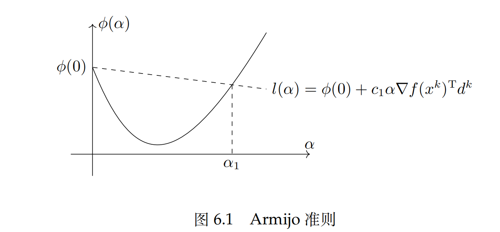
- Goldstein 条件： \(f(x_k + \alpha_k d_k) \le f(x_k) + c_1 \alpha_k \nabla f(x_k)^T d_k\)；同时要求： \(f(x_k + \alpha_k d_k) \ge f(x_k) + (1-c_1)\alpha_k \nabla f(x_k)^T d_k,\ 0 < c_1 < \frac12\)
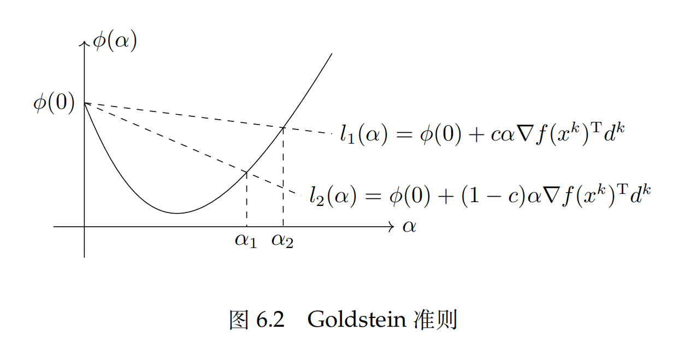
- Wolfe条件：\(f(x_k + \alpha_k d_k) \le f(x_k) + c_1 \alpha_k \nabla f(x_k)^T d_k\)，同时满足曲率条件： \(\nabla f(x_k + \alpha_k d_k)^T d_k \ge c_2 \nabla f(x_k)^T d_k,\ 0 < c_1 < c_2 < 1\)
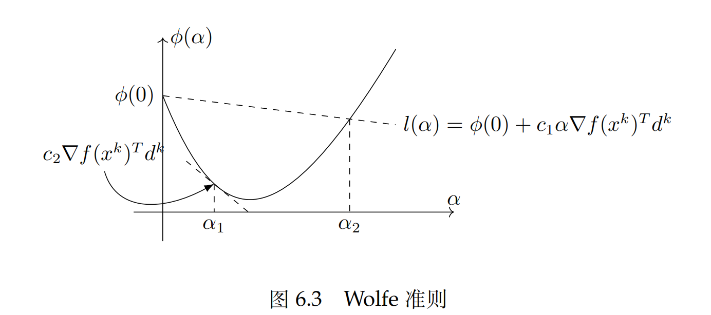
- 非单调线搜索：允许阶段性上升，以换取更快整体推进
- Backtracking：通过不断以指数方式缩小试探步长，找到第一个满足线搜索准则的点
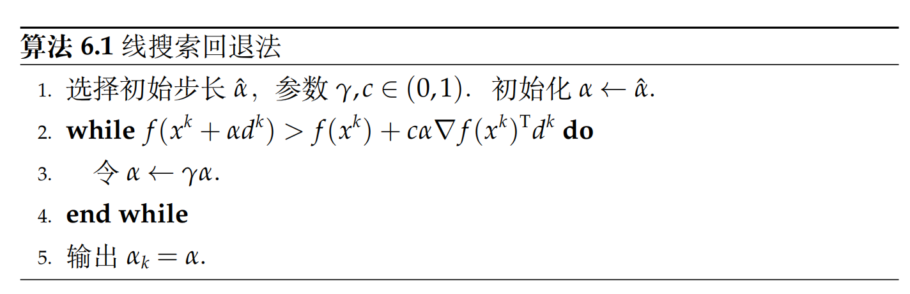
- Zoutendijk 收敛结论：考虑一般的迭代格式，如果满足：
- 目标函数有下界，连续可微；
- 目标函数梯度L-Lipschitz连续： \(||\nabla f(x) - \nabla f(y)|| \le L ||x - y||, \forall x, y \in \mathbb{R^n}\)；
- 迭代过程中满足Wolfe准则；
则有： \(\sum_{k=0}^{\infty} \cos^2 \theta_k\, ||\nabla f(x_k)||_2^2 < \infty\)
梯度下降法
- 取 \(d_k = -\nabla f(x_k)\)，迭代： \(x_{k+1} = x_k - \alpha_k \nabla f(x_k)\)
- 负梯度方向是最速下降方向（steepest descent direction）
- 梯度下降的问题：狭长谷地中容易出现 zigzag；条件数大时收敛慢；只利用一阶信息，对曲率适应性弱。
BB 方法
BB 不是只看当前梯度，而是用前后两步差分去估计局部尺度，仍采用： \(x_{k+1} = x_k - \alpha_k \nabla f(x_k)\)记： \(s_{k-1} = x_k - x_{k-1},\ y_{k-1} = \nabla f(x_k) - \nabla f(x_{k-1})\)，有常见步长：
- \(\alpha_k^{BB1} = \frac{s_{k-1}^T s_{k-1}}{s_{k-1}^T y_{k-1}}\)， \(\alpha_k^{BB2} = \frac{s_{k-1}^T y_{k-1}}{y_{k-1}^T y_{k-1}}\)
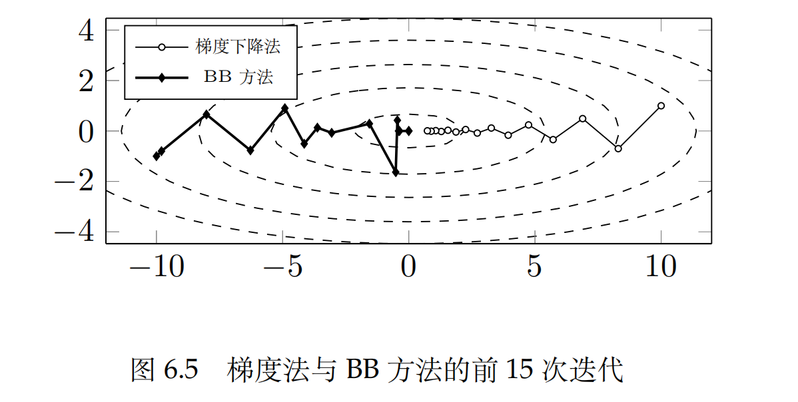
六、牛顿法（Newton Method）
牛顿法使用二阶Taylor展开近似原函数： \(f(x_k + d) \approx f(x_k) + \nabla f(x_k)^T d + \frac12 d^T \nabla^2 f(x_k) d\)
核心逻辑：梯度给斜率，Hessian 给曲率，牛顿法同时利用两者决定一步更新
牛顿方程： \(\nabla^2 f(x_k)d_k = -\nabla f(x_k)\)，若 Hessian 可逆，则 \(d_k = -[\nabla^2 f(x_k)]^{-1}\nabla f(x_k)\)
纯牛顿迭代： \(x_{k+1} = x_k + d_k\)（ \(\alpha_k = 1\)），若 \(f\) 是严格凸二次函数，则牛顿法一步到达最优点
牛顿法在适当条件下局部二次收敛（quadratic convergence）：若 \(\nabla^2 f(x^*) \succ 0\)，且 \(\nabla^2 f(x)\) 在 \(x^*\) 附近 Lipschitz 连续，则在初值足够接近时： \(||x_{k+1} - x^*|| \le C ||x_k - x^*||^2\)。直观上理解：靠近解后，精度会突然提升得非常快。
牛顿法的缺陷：
- 每步需解线性方程组，代价高
- Hessian 可能不正定或奇异
- 只具局部收敛性，对初值敏感
- 固定取 \(\alpha_k = 1\) 可能发散
修正牛顿法（Modified Newton Method）
\(B_k = \nabla^2 f(x_k) + \tau_k I\)，再解： \(B_k d_k = -\nabla f(x_k)\)
（当二阶信息不可靠时，给 Hessian 加一个保守修正）
阻尼牛顿法（Damped Newton Method）
\(x_{k+1} = x_k + \alpha_k d_k\)，其中 \(\alpha_k\) 由线搜索确定，常配合 Armijo 条件
CG 与牛顿子问题
牛顿步需要求解： \(\nabla^2 f(x_k)d_k = -\nabla f(x_k)\)，对大规模问题，直接分解代价约为 \(O(n^3)\)，若矩阵对称正定，可用共轭梯度（Conjugate Gradient, CG）近似求解，这样就把求牛顿步转成了高效解一个线性系统。
- 解 \(Ax = b\) 等价于最小化： \(\phi(x) = \frac12 x^T A x - b^T x\)，梯度为残差： \(\nabla \phi(x) = Ax - b = r\)
- CG 沿 \(A\)-共轭方向做精确线搜索。
- 若 \(A\) 有 \(r\) 个不同特征值，则 CG 至多 \(r\) 步终止
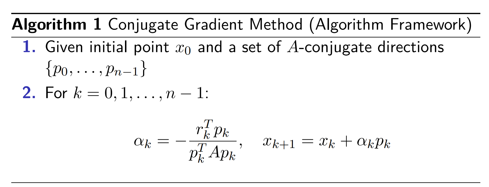
不精确牛顿法
允许残差： \(\nabla^2 f(x_k)d_k = -\nabla f(x_k) + r_k\)
常用准则： \(||r_k|| \le \eta_k ||\nabla f(x_k)||,\ 0 \le \eta_k < 1\)
结论： \(\eta_k\) 有界时可得线性收敛； \(\eta_k \to 0\) 时可得超线性收敛
七、拟牛顿方法（Quasi-Newton Method）
拟牛顿方法的基本思想
拟牛顿方法的基本思想：不直接计算 Hessian，而构造近似矩阵： \(B_k \approx \nabla^2 f(x_k),\ H_k \approx [\nabla^2 f(x_k)]^{-1}\)
搜索方向可写为： \(d_k = -B_k^{-1}\nabla f(x_k)\)，也可写为： \(d_k = -H_k \nabla f(x_k)\)
割线方程
定义： \(s_k = x_{k+1} - x_k,\ y_k = \nabla f(x_{k+1}) - \nabla f(x_k)\)，割线方程（secant equation）为： \(B_{k+1}s_k = y_k\)
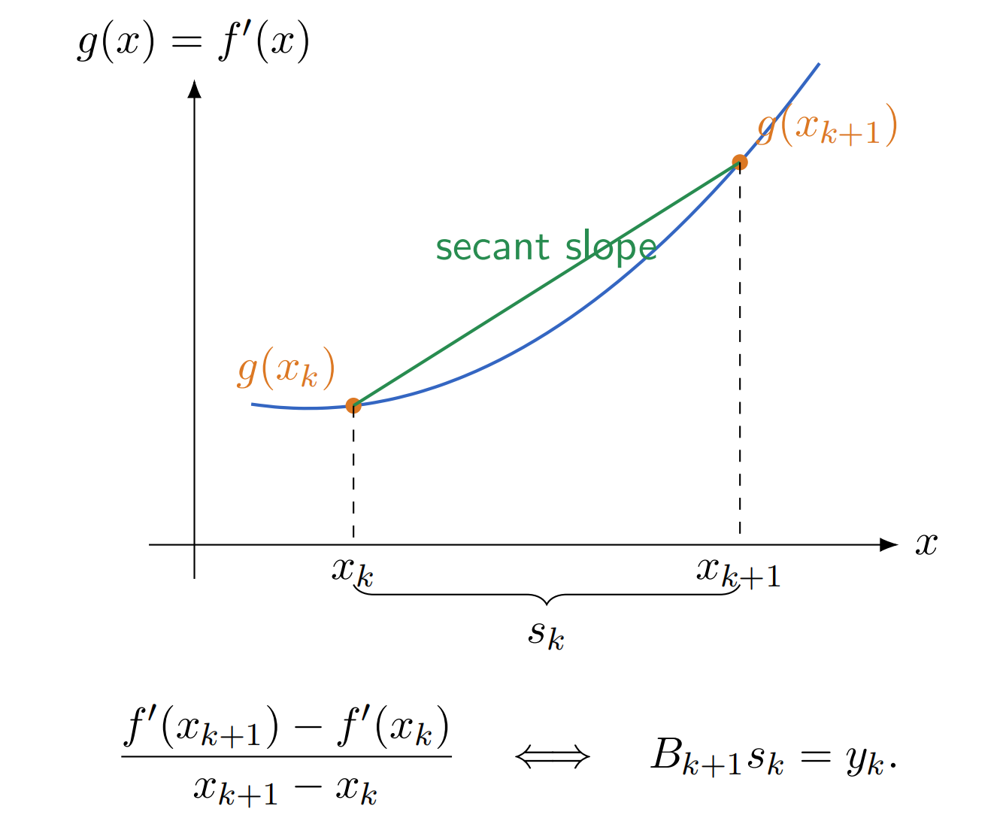
曲率条件（保证 \(B_k\)的正定性）： \(s_k^T y_k > 0\)，若 \(B_k \succ 0\)，则 \(d_k = -B_k^{-1}\nabla f(x_k)\) 为下降方向
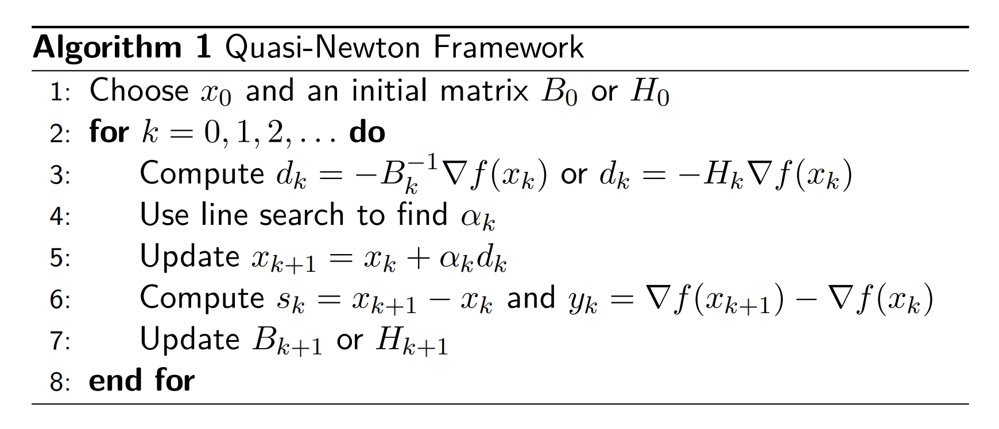
SR1 （秩一更新）
记： \(r_k = y_k - B_k s_k\)，SR1 更新表示为： \(B_{k+1} = B_k + \frac{r_k r_k^T}{r_k^T s_k}\)
SR1满足割线方程，保持对称，但不保证正定，它是更新思想的起点，而不是最优选择
BFGS （秩二更新）
\(B_{k+1} = B_k + \frac{y_k y_k^T}{s_k^T y_k} - \frac{B_k s_k s_k^T B_k}{s_k^T B_k s_k}\)（第二项是引入更新信息，第三项是剔除旧的错误信息）
实际操作中往往不更新 \(B\)： \(H_{k+1} = (I - \rho_k s_k y_k^T)H_k(I - \rho_k y_k s_k^T) + \rho_k s_k s_k^T\)， \(\rho_k = \frac{1}{s_k^T y_k}\)
BFGS满足割线方程，保持对称性；若 \(H_k \succ 0\) 且 \(s_k^T y_k > 0\)，则 \(H_{k+1} \succ 0\)，因而 \(d_k = -H_k \nabla f(x_k)\) 是下降方向。这正是 BFGS 在实践中最常用的核心原因。
在 Hessian 有界、初始矩阵正定、Wolfe 线搜索成立时，BFGS 可得全局收敛；若在最优点附近 Hessian 足够光滑，则 BFGS 可呈 Q-超线性收敛
L-BFGS不显式存储完整 \(H_k\) 或 \(B_k\)，只保留最近 \(m\) 组 \(s_i,y_i\)，存储量小，适合大规模问题
八、最小二乘问题
线性最小二乘（LS）
\(\min_x \frac12 ||Ax - b||_2^2\)，残差： \(r(x) = Ax - b\)
几何解释：列空间： \(R(A) = \{Ax : x \in R^n\}\)，最小二乘解满足： \(Ax^* = \Pi_{R(A)}(b)\)。即 \(Ax^*\) 是 \(b\) 在列空间上的投影
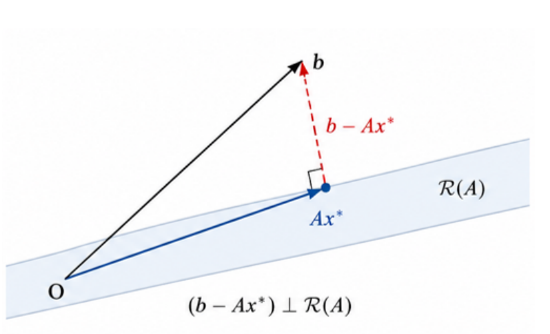
最优残差： \(r^* = Ax^* - b\)
正交条件： \(A^T(Ax^* - b) = 0\)（最优残差不能再沿列空间方向继续减小）
正规方程：由正交条件或一阶最优性条件 \(\nabla f(x) = A^T(Ax - b)\) 得到： \(A^T A x = A^T b\)
（几何投影条件和优化一阶条件殊途同归）
在数值计算的过程中， \(A^T A\) 会放大病态性： \(\kappa(A^T A) = \kappa(A)^2\)，实际中常用 QR 或 SVD 求解。
非线性最小二乘（NLS）
\(\min_x \frac12 \sum_{i=1}^m r_i(x)^2 = \frac12 ||r(x)||_2^2\)
设残差 Jacobian 为： \(J(x) = \nabla r(x)\)，
梯度： \(\nabla f(x) = J(x)^T r(x)\)，
Hessian： \(\nabla^2 f(x) = J(x)^T J(x) + \sum_{i=1}^m r_i(x)\nabla^2 r_i(x)\) 第一项来自 Jacobian，第二项来自残差本身的非线性曲率，引入Gauss-Newton近似： \(\nabla^2 f(x) \approx J(x)^T J(x)\)
Gauss-Newton法
局部线性化： \(r(x_k + d) \approx r(x_k) + J(x_k)d\)
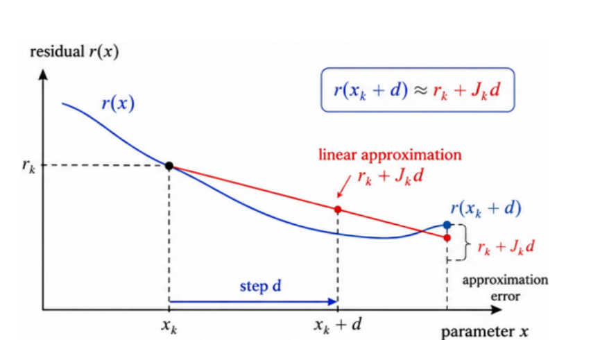
子问题： \(\min_d \frac12 ||J(x_k)d + r(x_k)||_2^2\)（这里运用了范数保模长的性质）
其正规方程正是 Gauss-Newton 方程： \(J(x_k)^T J(x_k)d_k = -J(x_k)^T r(x_k)\)
（所以 Gauss-Newton 也可看成每步解一个局部线性最小二乘问题）
九、约束优化与罚函数方法
约束优化问题
一般形式： \(\min_x f(x)\)，约束： \(c_i(x) = 0,\ i \in E,\ c_j(x) \le 0,\ j \in I\)
难点：既要降低目标函数，又要满足约束，下降方向未必留在可行域里
外点罚函数法
外点罚函数法允许迭代过程中暂时违反约束。
等式约束下：\(P_E(x,\sigma) = f(x) + \frac{\sigma}{2}\sum_{i \in E} c_i(x)^2\)
不等式约束下：\(P_I(x,\sigma) = f(x) + \frac{\sigma}{2}\sum_{j \in I}\tilde c_j(x)^2\)， \(\tilde c_j(x) = \max\{c_j(x),0\}\)
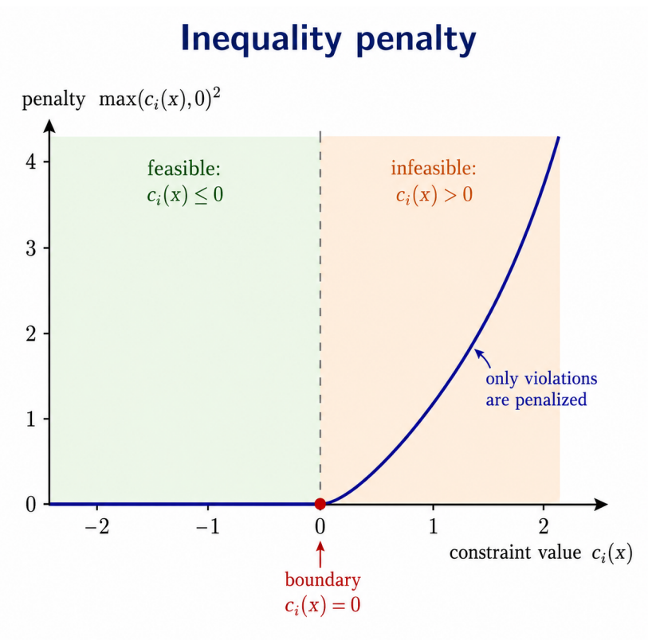
统一写为：\(P(x,\sigma) = f(x) + \frac{\sigma}{2}\left(\sum_{i \in E} c_i(x)^2 + \sum_{j \in I}\tilde c_j(x)^2\right)\)
- 迭代点允许暂时不可行，通过增大 \(\sigma\) 逐步拉回可行域。先允许犯规，再逐步把犯规成本抬高
- 罚参数的作用：\(\sigma\) 越大，约束违反通常越小，但是子问题会变得病态
- 停止准则： \(||c(x_{k+1})||_2 \le \varepsilon\) ，\(||x_{k+1} - x_k||_2 \le \varepsilon\)
罚函数法思想的应用：LASSO和低秩矩阵修复
内点罚函数法
内点罚函数要求迭代始终严格可行
\(P_{\log}(x,\sigma) = f(x) - \sigma \sum_{i \in I}\ln(-c_i(x))\)，定义域要求： \(c_i(x) < 0\)
十、KKT 条件
无约束问题常以 \(\nabla f(x^*) = 0\) 作为一阶条件。约束优化中，变量不能沿任意方向移动，因此一般不能要求 \(\nabla f(x^*) = 0\)。受约束时，最优点可能仍有非零梯度，只是没有可行下降方向
约束形式与 Lagrangian
- 统一记号： \(c_i(x) = 0,\ i \in E,\ c_i(x) \le 0,\ i \in I\)
- Lagrangian： \(L(x,\lambda) = f(x) + \sum_{i \in E}\lambda_i c_i(x) + \sum_{i \in I}\lambda_i c_i(x)\)
等式罚函数子问题的一阶条件可写成： \(\nabla f(x) + \sum_{i \in E}\sigma c_i(x)\nabla c_i(x) \approx 0\)
若定义 \(\lambda_i = \sigma c_i(x)\)，则形式上接近： \(\nabla f(x) + \sum_{i \in E}\lambda_i \nabla c_i(x) \approx 0\)（Lagrangian梯度）
（ KKT是 penalty 观点自然逼近出的条件）
切锥、线性化可行锥与LICQ
对可行集 \(X\)，切锥（tangent cone） \(T_X(x)\) 表示点 \(x\) 处的一阶可行方向集合
活跃集（active set）： \(A(x) = E \cup \{i \in I : c_i(x) = 0\}\)
线性化可行锥（linearized feasible cone）： \(F(x) = \{d : \nabla c_i(x)^T d = 0,\ i \in E;\ \nabla c_i(x)^T d \le 0,\ i \in A(x)\cap I\}\)，它是切锥的可计算一阶近似
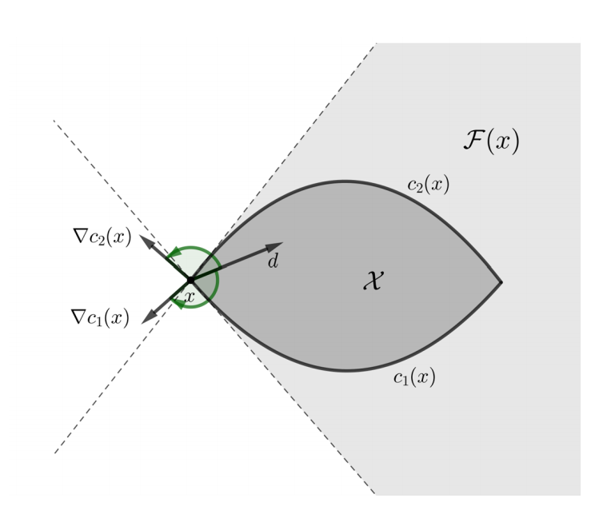
LICQ（Linear Independence Constraint Qualification）：活跃约束的梯度线性无关（在适当约束资格条件下，可由线性化可行锥推导 KKT 条件）
KKT 条件
- 平衡条件（stationarity）： \(\nabla_x L(x^*,\lambda^*) = 0\)（目标函数的下降趋势被约束梯度平衡）
- 原始可行性（primal feasibility）： \(c_i(x^*) = 0,\ i \in E,\ c_i(x^*) \le 0,\ i \in I\)
- 对偶可行性（dual feasibility）： \(\lambda_i^* \ge 0,\ i \in I\)
- 互补松弛（complementary slackness）： \(\lambda_i^* c_i(x^*) = 0,\ i \in I\)
- 若 \(c_i(x^*) < 0\)，则该不等式约束不活跃，故 \(\lambda_i^* = 0\)
- 若 \(\lambda_i^* > 0\)，则必有 \(c_i(x^*) = 0\)
- 即：不活跃约束不起作用，真正起作用的只能是边界上的活跃约束
对一般非凸问题：KKT 是必要条件，不一定充分；对凸优化问题：在适当条件下，KKT 往往既必要又充分。因此在算法中，KKT 点通常先作为候选最优点来逼近
增广拉格朗日方法（Augmented Lagrangian Method）
增广拉格朗日函数
对等式约束 \(c(x)=0\) ，增广拉格朗日函数（augmented Lagrangian）： \(L_\sigma(x,\lambda)=f(x)+\lambda^Tc(x)+\frac{\sigma}{2}||c(x)||^2\)（原目标函数、乘子修正、可行性控制）
基本算法：
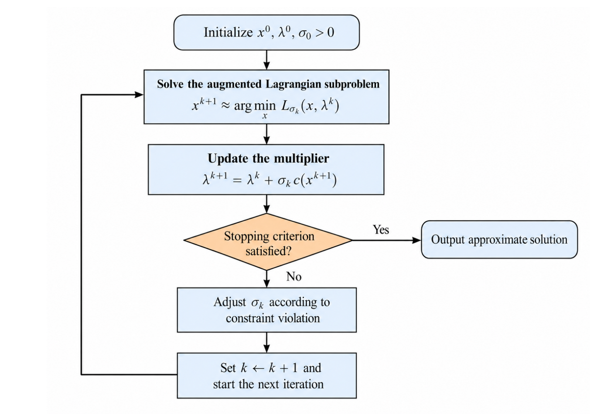
- 二次罚函数法主要依赖大 \(\sigma\)，而ALM 同时使用乘子更新与罚项，因而往往能在较温和的 \(\sigma\) 下取得更好的可行性与最优性。
- 若可行性改进足够，可保持 \(\sigma_{k+1}=\sigma_k\)，若可行性停滞，再增大 \(\sigma_{k+1}=\rho\sigma_k\) ，其中 \(\rho>1\)
- 罚参数是辅助角色，乘子更新才是核心
- ALM 的目标是逼近 KKT 系统，常见停止准则： \(||c(x^k)||\le \varepsilon_{feas}\) ，且 \(||\nabla_x L(x^k,\lambda^k)||\le \varepsilon_{opt}\)
不等式约束的 projected update
- 对 \(c_i(x)\le 0\) ，乘子必须非负
- 常用 projected update： \(\mu_i^{k+1}=max\{0,\mu_i^k+\sigma_k c_i(x^{k+1})\}\)